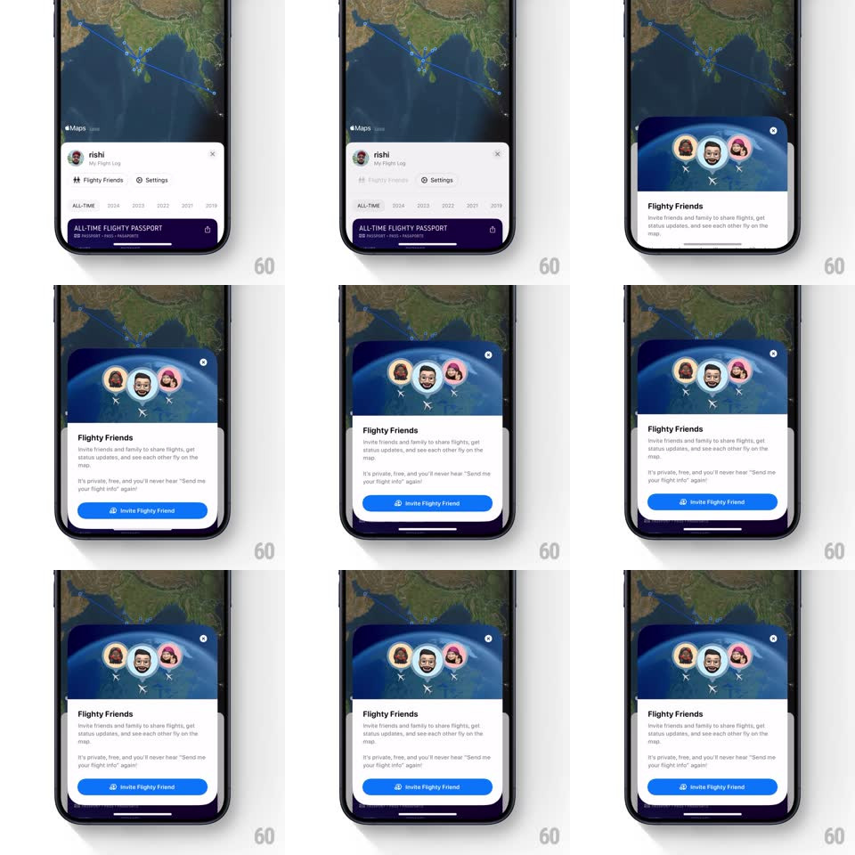

Media
Frame-by-frame

Rebuild this interaction 1:1: Flighty's Friends sheet - a spring-loaded bottom sheet over the flight map, topped by a looping globe illustration with friend avatars orbiting it.

Rebuild this interaction 1:1: Flighty's Friends sheet - a spring-loaded bottom sheet over the flight map, topped by a looping globe illustration with friend avatars orbiting it. ## Integration Integration: stack-agnostic spec - springs given as stiffness/damping, timed motions as duration + curve; map every value to your framework and animation library of choice. ## Scene Over the live flight map (route line visible), a profile sheet shows the user's name, "Flighty Friends" and "Settings" rows, and the purple "ALL-TIME FLIGHTY PASSPORT" card. Tapping Flighty Friends raises a taller sheet: a dark-blue globe header with three friend avatars in rings connected by orbit lines, "Flighty Friends" title, explainer copy, and a blue "Invite Flighty Friend" button. ## Motion spec Pattern: spring bottom sheet + looping orbit illustration. - Sheet entry: rises from the bottom with spring ~360/22 (a slight overshoot past its resting detent, settling in ~500ms); the map behind dims 20% and zooms out a touch (scale 1 to 0.96) as the sheet covers it. - The globe header: the earth rotates continuously (1 revolution per 20s, linear); the three avatar rings sit on orbit lines that sweep slowly around the globe (each orbit 8-12s, different phases and tilts); avatars counter-rotate so faces stay upright. - Sheet content (title, copy, button) staggers up after the sheet lands: translateY 16px to 0, 250ms, 80ms apart; the Invite button fills last with a blue sweep (200ms). - Drag-to-dismiss: the sheet tracks the finger 1:1 downward with resistance past the top edge; release below 40% dismisses (accelerating ease-in, 300ms), above snaps back (spring ~400/26). - Transition from the profile card state: the sheet's top edge stretches upward (height animates) rather than a new sheet sliding over - the passport card slides out left as the globe header expands in from the top. ## Calibration - The globe loop must be seamless - avatar orbits never jump at wrap. - Keep one detent only; no half-open state. ## Reduced motion Sheet slides up without overshoot; globe static with avatars placed. ## Don't miss - The orbit lines are drawn thin and light against the dark globe; avatars have white ring borders. - The purple passport card and the blue globe header are the two color blocks - everything else is white sheet.